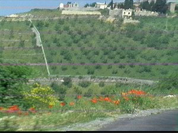
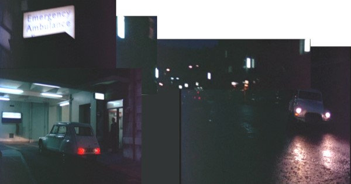

|
|
HELP FIND THE FOLLOWING ROMAN LOCATIONS
PAGE 19
THE PROTECTORS: A Case for Right
(Michael Lindsay-Hogg, Summer 1972)
Villa Palladio, Via della Camilluccia, Rome, Lazio, Italy -
The Contessa’s villa near Rome
(Identified by Sietse Postma, March 2025)

Muro dei Francesi, Ciampino, Rome, Lazio, Italy - At house owned by
Prince Carpiano about five miles outside Rome,
Harry (Robert Vaughn) drives The Contessa (Nyree Dawn Porter) to one of The Prince’s
exclusive costume
parties in his car. Chino
(Anthony Chinn) parks the Rolls in the car park just in case.
(Identified by Sietse Postma, March 2025)


Unknown 1 - Harry follows in has car as one of the black-shirted men from the party races down the hill from the villa.


THE PROTECTORS: A Kind of Wild Justice (Jeremy Summers: 1972)
Unknown 1 -
After he is shot, Harry is rushed by ambulance to a nearby hospital.

Think you know a spot? Need a bigger image? Email me.
< Previous | Index | Avengerland | Next >
Copyright © 2003 Anthony R. McKay